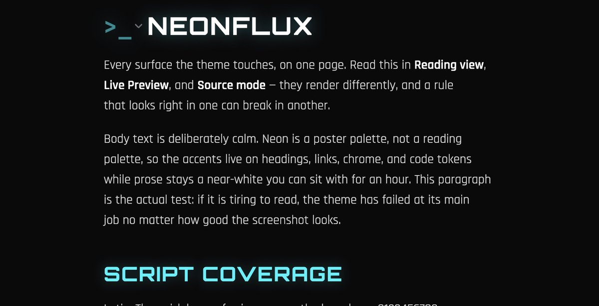

Neonflux
A cyberpunk theme for Obsidian, built on the same palette as cyberpunk-ui. Neon on near-black, a light mode that is not an afterthought, six fonts embedded for Latin and Cyrillic, and no JavaScript at all. Listed in Obsidian's community themes catalog.

Install
Settings → Appearance → Themes → Manage → search "Neonflux"
Built for reading, not for screenshots
A note-taking app is read for hours, so the palette is restrained where it counts. Accents live on short strings — headings, links, chrome, code tokens — while prose stays a calm near-white. Glow is applied to h1 and h2 only, never to text read at length.
Contrast is enforced by a checker that runs over both themes and fails the build on regression. Muted text and syntax-highlight colours are held to the 4.5:1 text floor rather than the looser 3.0 non-text one, because a code comment is text somebody parses. Form controls get their own higher-contrast border token, since on a text field or checkbox the border is the affordance.
Latin and Cyrillic
Orbitron, Rajdhani and Share Tech Mono have no Cyrillic at all, so each is paired with a companion — Unbounded, Exo 2 and JetBrains Mono. Font fallback is per-glyph, so a note mixing English and Ukrainian renders correctly with no unicode-range rules and no JavaScript. The companions ship their Cyrillic subsets only, so no Latin glyph is embedded twice.
What I Learned
That a poster palette and a reading palette are different problems. Neon on black looks great in a screenshot and punishes you in a note you sit with for an hour.
Also that some bugs only exist inside the app. Two never showed up in the CSS: a blanket focus ring drew a cyan box around the entire editor, and heading casing was applied only to Reading view's DOM, so headings changed shape the moment the cursor entered them. Obsidian's Reading view and Live Preview are different DOMs — a rule that lands in one can miss the other entirely.